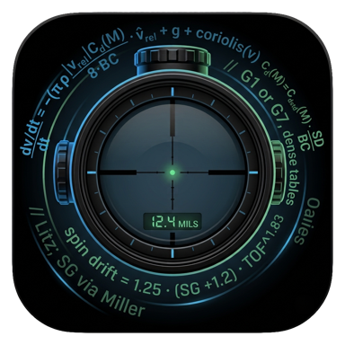
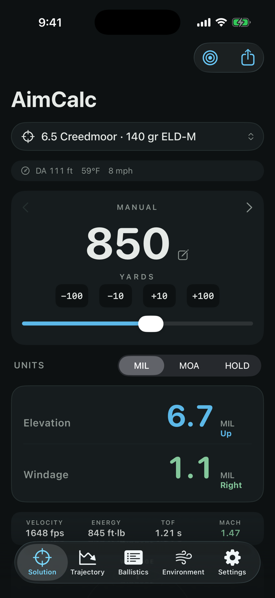
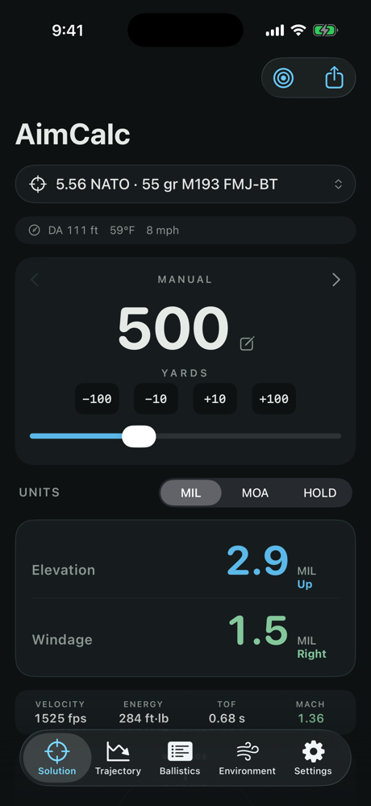
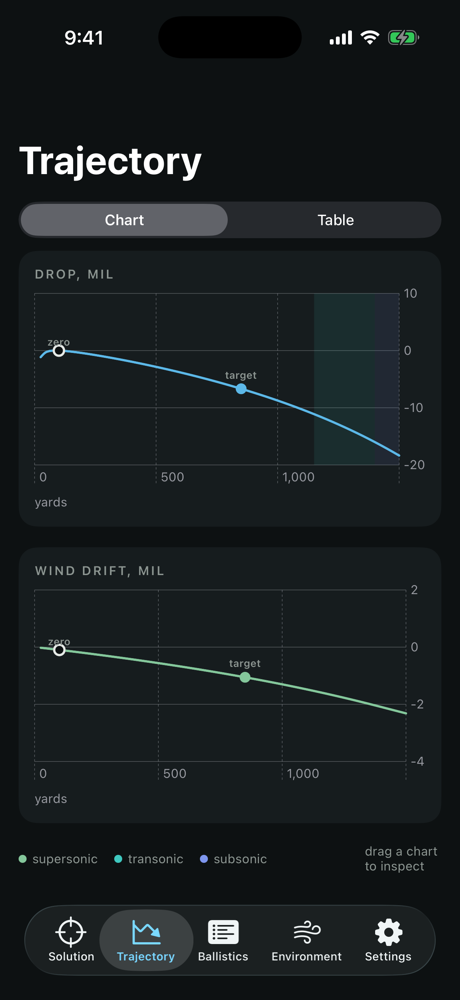
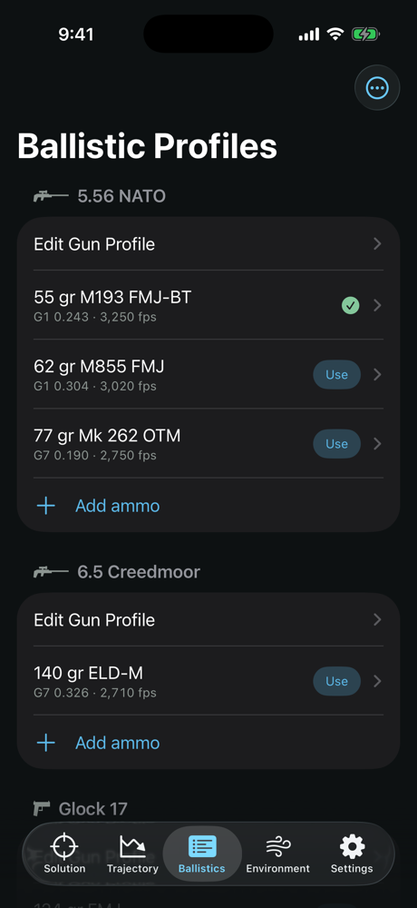
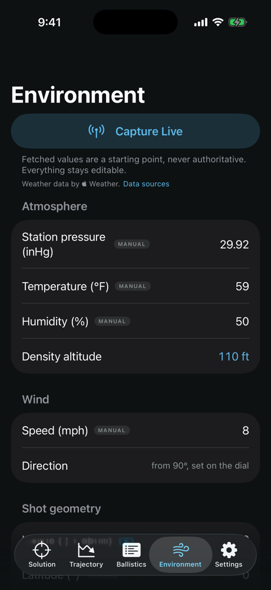
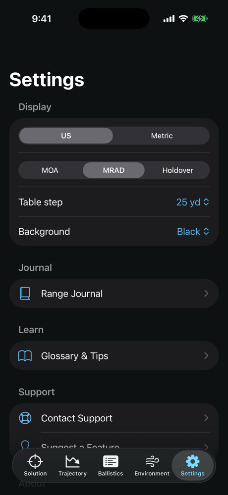
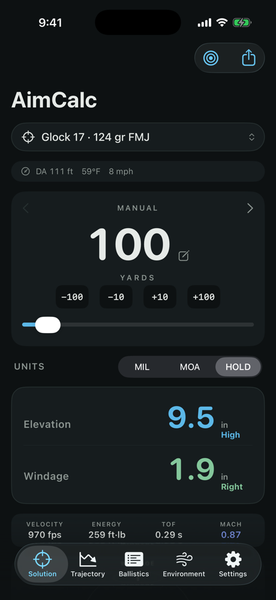

For iPhone & Apple Watch

AimCalc turns range, wind, and weather into two numbers you can dial, with a real point-mass solver, live environment capture, and D.O.P.E. on your wrist.

A full firing solution: drop, drift, spin drift, Coriolis, and incline, recomputed instantly on every input change.
Elevation and windage in MIL, MOA, or plain-English holdover (inches/cm) for fixed sights, with direction spelled out. Slide, step, or type the exact range, down to 5 yards.
One tap pulls pressure, temperature, humidity, and wind from your location via Apple Weather. Every value stays editable, with provenance badges.
Save the current solution as a photo card stamped with its conditions and time, or AirDrop it straight to your spotter.
Save named firing points with range and incline at the stage walkthrough, then engage them with a tap, or a swipe on your watch.
Open the camera, put the crosshair on the target, and capture the shot angle. No more guessing the slope.
Shot high or low at a known distance? Enter the miss and AimCalc solves the muzzle velocity your barrel actually delivers, then applies it to the load.
One tap logs the session: solution, conditions, location, a photo of your target, and your notes: a shooter's diary that builds itself.
A cartridge library from .17 HMR to .375 H&H: rifle, handgun, rimfire, even 12-gauge slugs, each with published BC, velocity, and typical twist.
Straight from the app: solution, trajectory, profiles, environment, and settings.





Set any gun to Holdover and the solution stops speaking clicks and starts speaking distance: real inches, feet, centimeters, or meters at the target.
A disciplined shooter behind a red dot can hang surprisingly close to a dialed scope, if you're good enough to eyeball the hold. AimCalc gives you the exact number to eyeball.

The watch runs the same solver on-device, no phone round trip, no signal needed.
Not a lookup table: a modified point-mass solver integrating the actual equations of motion, validated against published reference trajectories.
Fixed-step integration at 2,000 Hz with G1 and G7 standard drag curves scaled by your bullet's BC.
ICAO model with humidity correction; density altitude shown as a sanity check against your Kestrel.
Litz spin-drift with Miller stability from your twist rate, and full 3-D Earth-rotation terms from latitude and azimuth.
Uphill and downhill shots solved with gravity decomposed over the sight line, not the rifleman's-rule shortcut.
Your zero-day atmosphere is stored with the rifle, and so is the load your zero belongs to: mixed-velocity ammo through one scope zero dials honestly, and "zeroed at sea level, shooting at 8,000 ft" comes out right.
The teal band on every chart marks where drag spikes and confidence should drop: the app tells you when to trust your impacts more.
dv/dt = −(π ρ |v_rel| Cd(M) / 8·BC) · v̂_rel + g + coriolis(v) Cd(M) = Cd_std(M) · SD / BC // G1 or G7, dense tables spin drift = 1.25 · (SG + 1.2) · TOF^1.83 // Litz; SG via Miller
References: McCoy, Modern Exterior Ballistics (1999) · Litz, Applied Ballistics for Long Range Shooting · Miller, Precision Shooting (2005) · G1/G7 standard drag tables (BRL, Aberdeen Proving Ground) · ICAO Standard Atmosphere with Buck (1981) humidity correction.
Nothing to collect, nothing collected. AimCalc has no accounts, no analytics, no ads, and no servers. Profiles live on your device; location is used only for weather and Coriolis and never reaches us. Read the two-minute privacy policy.
{kind=link}
{kind=link}
{kind=link}
{kind=link}
{kind=link}
{kind=link}